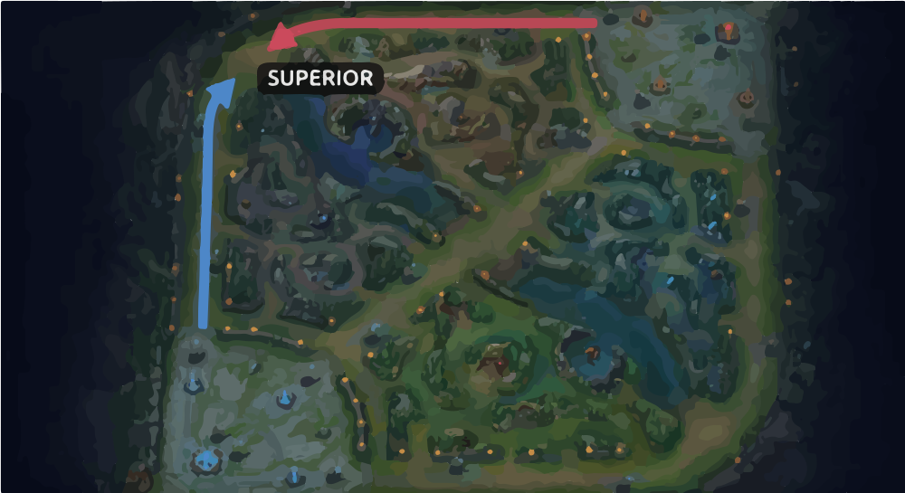

<section id="Inicio" class="primary-bg section">
    <div class="main-content inicio-content">
        <div class="inicio-text-content">
            <h2>Top Lane</h2>
            <p>A top lane (rota superior) no League of Legends é uma das três rotas principais do mapa e geralmente
                é ocupada por campeões tanques, lutadores ou bruisers, que possuem resistência e poder de combate
                individual. Os jogadores da top lane costumam se concentrar em lutas mano a mano (1v1), controle de
                objetivos como o Arauto do Vale e criar pressão no mapa ao empurrar a rota. Por ser uma rota
                isolada, exige bom controle de visão e posicionamento estratégico, além de um bom equilíbrio entre
                resistência e dano.</p>
        </div>
        <div class="inicio-img">
            
        </div>
    </div>
</section>